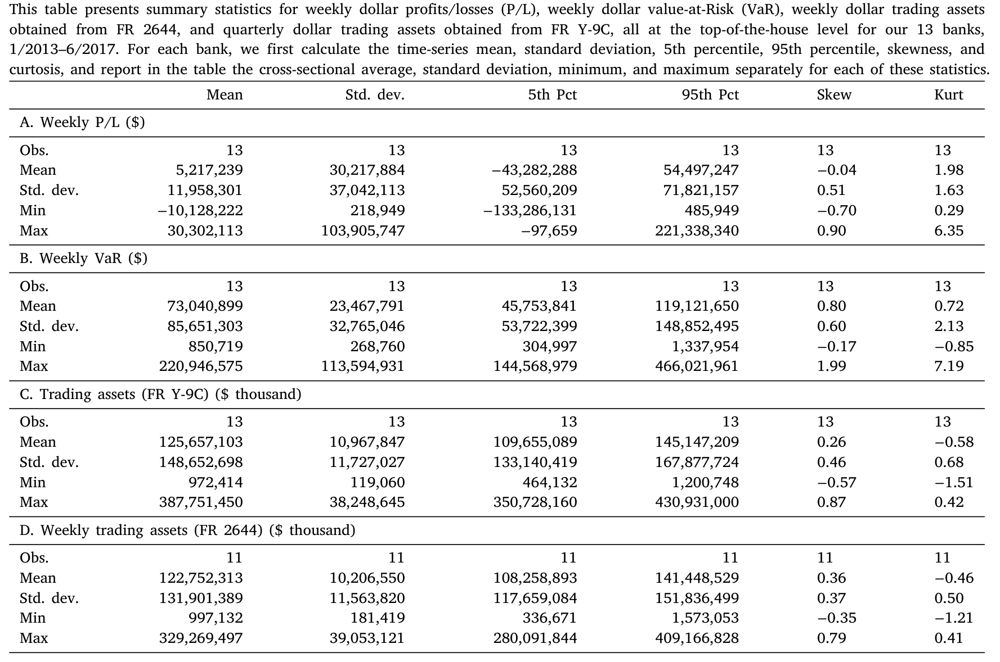

banks-as-regulated-traders
这里 \(\pi_{i,t}\) 是银行 \(i\) 在第 \(t\) 周经过标准化的净交易利润，\(f_{k,t}\) 是第 \(k\) 个风险因子的当周实现值，\(\beta_{i,k}\) 就是我们要的敞口。误差项的处理上，作者用了能容纳横截面与序列相关的方法（Driscoll and Kraay, 1998; Newey and West, 1994）。一个系数 \(\beta_{i,\mathrm{eq}}\) 的大小，就回答了「这家银行在多大程度上是在赌股市」。
数据这一头同样关键。作者用的是【新近才可得】的高频监管数据：银行交易簿每日的盈亏。具体到银行层面，样本是 2913 个「银行—周」观测、13 家美国银行，时间从 2013 年 1 月到 2017 年 6 月；这 13 家覆盖了全行业约 90% 的交易资产。作者还补充了一个更细颗粒度的「交易台—资产类别」样本，覆盖 20 家银行，几乎是美国银行业交易资产的全集。

Table 1
3 主要结果：原来交易簿一直在「赌股市上涨」
把回归跑出来，第一个、也是最干净的发现是：在沃尔克规则定稿之前，美国银行的交易利润对股票市场风险有着经济意义上极大的敏感度；规则之后，这块敞口被彻底砍掉。
这个下降有多大？作者给了一个非常直观的换算：在规则之前，一次「一个标准差的标普负收益」（大约对应 2 个百分点的下跌），会让交易亏损相对于 风险价值 (Value-at-Risk, VaR) 多出约 14 个百分点；规则之后，这 14 个百分点没了。要知道，这个量级和样本里银行净利润相对 VaR 的标准差是【同一个数量级】的——不是统计上勉强显著的一点点，而是实打实地把交易簿对股市的下注给关掉了。
更有意思的是机制的「双通道」：股票敞口的下降，不只来自股票子组合（直接的方向性股票交易），也来自其他交易台——那些原本也通过自己的方向性交易间接暴露在股市因子上的台子，规则之后也一起收敛了。换句话说，规则压下去的，是整张交易簿弥漫的「股市赌性」。
那别的因子呢？这里故事开始变得有层次。利率、信用、美元的敞口，从头到尾都比股票小得多。 一个标准差的信用因子变化，只带来约 5 个百分点的利润变化；美元因子则只有约 3 个百分点——而且信用与美元的敞口看上去并没有被规则显著改变。值得玩味的是，后沃尔克时期残余的信用敞口，主要由【压力测试不及格】的那些银行驱动；这与后危机时代金融机构「追逐收益 (reach for yield)」的既有证据相吻合（Becker and Ivashina, 2015; Di Maggio and Kacperczyk, 2017）。而美元敞口的延续，则与某些商品和货币交易本就被豁免有关。
于是作者下了一个克制而诚实的判断：禁止自营交易，是一件削减「大敞口」的有效金融稳定工具，但它不是万能药——那些更小、更分散的敞口，可能需要别的、更有针对性的工具去管。
4 识别策略（下）：申报要求分批落地，给了一把因果的尺子
到这里，一个挑剔的读者一定会皱眉：股票敞口在 2014 年前后骤降，凭什么说是沃尔克规则的功劳？2013–2014 年间，宏观环境在变、别的监管（巴塞尔 III、压力测试、资本与流动性新规）也在变。这是典型的「同期混淆 (contemporaneous confounds)」难题。
接着，一个自然的问题是：有没有一个银行【自己改不了、又只跟规则有关】的时间错位，能拿来做对照？
有。这正是本文识别上最关键的一步：沃尔克规则的「申报要求 (reporting requirement)」是分批、错峰落地的。 规模不同的银行，被要求开始上报交易指标（持仓限额、因子敏感度、盈亏、VaR）的时间不一样——交易资产与负债在 $50 亿美元以上的，2014 年 6 月 30 日起报；介于 $25–$50 亿的，2016 年 4 月 30 日；介于 $10–$25 亿的，2016 年 12 月 31 日。前后铺了整整两年半。
这就给了一个干净的 双重差分 (difference-in-differences, DiD) 设计：把「已经被纳入申报」的银行当作处理组，把「尚未被纳入、但大概率面对相同共同冲击」的银行当作对照组，从而把所有银行共有的同期冲击吸收掉。